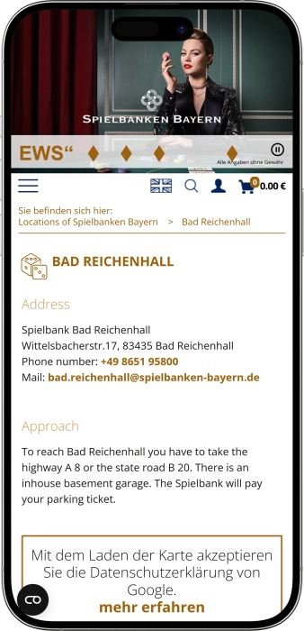
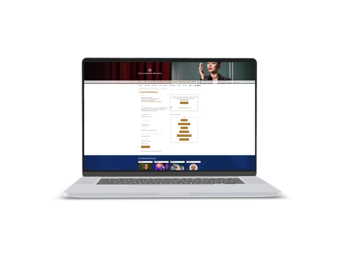

Exklusives Willkommensangebot von
Exklusives Willkommensangebot von
Spielbank Bad Reichenhall — Casino, Roulette, Poker, Automaten, Cultino und JETON
Top-Casino
Bonusdetails
Casino
Boni
Rate
Frei Spins
Mehr Infos
Erhalten
Vorteile
- In der Spielbank Bad Reichenhall verbinden wir klassisches Spiel, moderne Automaten, die Cultino-Bühne, Bar-Genuss und Restaurant-Komfort.
-
Bayern-Jackpot: Gewinne bis €1.000.000 erleben.
-
Jackpot-Einstieg schon ab nur €0,50.
-
€4 VIP-Jetons nach Cultino-Abenden sichern.
-
Dice52 bietet Auszahlungen bis €5.000.
-
Roulette, Black Jack und Poker live.
-
Rund 90 Automaten mit Multiroulette.
-
Freier Eintritt, gepflegtes Abendflair.
- Unser Casino eignet sich für einen spontanen Abend, einen besonderen Anlass und den ersten Besuch in stilvoller Umgebung. Wir setzen auf verständliche Abläufe, persönliche Betreuung, hochwertige Unterhaltung und ein vielseitiges Erlebnis zwischen Spiel, Bühne und Genuss.
Spielbank Bad Reichenhall App



Über das Spielbank Bad Reichenhall
Wir überzeugen mit Live-Spiel, modernen Automaten, Cultino-Bühne und Oceans-Club in einem stimmigen Abendkonzept. Unser Casino verbindet Spannung, Musik, Drinks und Gastronomie zu einem gepflegten Erlebnis mit besonderem Charakter.
- Bayern-Jackpot bis €1.000.000.
- €4 VIP-Jetons inklusive.
- Dice52 zahlt €5.000.
Die Spielbank Bad Reichenhall begrüßt ihre Gäste in einem eleganten Casino-Ambiente, in dem Spiel, Kultur und Genuss zusammenfinden. Wir bieten Live-Roulette, Black Jack, Poker und moderne Automaten für Gäste, die einen gepflegten Abend erleben möchten. Unser Casino ist ideal für erfahrene Spieler und für alle, die zum ersten Mal echte Spielbankatmosphäre genießen wollen.

Vom Empfang bis zum Spieltisch legen wir Wert auf Orientierung, Service und eine angenehme Stimmung. Die Cultino-Bühne ergänzt unser Haus mit Musik, Kabarett, Comedy und besonderen Live-Momenten. In der Bar lässt sich der Abend entspannt begleiten oder stilvoll verlängern. Das Restaurant JETON macht den Besuch kulinarisch rund. Wir verbinden Spielvergnügen mit Unterhaltung, Genuss und persönlicher Gastfreundschaft. Jeder Besuch kann spontan, festlich oder bewusst entspannt gestaltet werden. Die Spielbank Bad Reichenhall steht für stilvolle Abende, spannende Spiele und ein Ambiente, das in Erinnerung bleibt.
Spielbank Bad Reichenhall: Öffnungszeiten, Zahlungsmethoden und Treueprogramm
Spielbank Bad Reichenhall: Spiel, Bühne und Genuss am Abend
In der Spielbank Bad Reichenhall verbinden wir elegantes Casino-Flair, moderne Automaten, die Cultino-Bühne, den Clubbereich Oceans und das Restaurant JETON zu einem vielseitigen Abendkonzept. Unser Stil lebt von klassischem Spiel, gepflegter Atmosphäre und einer Umgebung, in der Gäste spielen, Musik erleben, essen, trinken und den Abend bewusst genießen können. Das Automatenspiel startet bei uns bereits ab Mittag, während das Große Spiel mit Roulette, Black Jack, Poker und Dice52 den Abend prägt. American Roulette ist live am Abend erlebbar, während virtuelle Formate und Multiroulette einen früheren Einstieg ermöglichen. Black Jack und Bavarian Texas Hold’em bringen Kartenspannung an den Tisch, Dice52 ergänzt unser Angebot um ein besonderes Würfelspiel. An der Bar im Spielsaal servieren wir Erfrischungen, alkoholfreie Drinks, Cocktails und festliche Getränke für besondere Momente. Das Restaurant JETON erweitert den Besuch um ein kulinarisches Erlebnis direkt im Casino. Die Cultino-Bühne setzt Akzente mit Musik, Kabarett, Comedy, Konzerten und kompakten Live-Abenden. Oceans steht für Drinks, lockere Clubstimmung, Feiern und Gamen in einem modernen Rahmen. Für Gäste von Cultino-Abenden gibt es attraktive Casino-Extras wie VIP-Jetons, ein Getränk und eine Roulette-Erklärung. Unser Haus lässt sich hervorragend mit einem Hotelaufenthalt oder einem Abend in der Stadt verbinden. Wir gestalten jeden Besuch als stimmiges Erlebnis aus Spiel, Service, Genuss und Unterhaltung.
| Bereich | Tage | Zeit |
|---|---|---|
| Automatenspiel | täglich | ab 12:00 Uhr |
| Virtual Roulette und Multiroulette | täglich | ab 12:00 Uhr |
| Großes Spiel | täglich | 16:00–02:00 Uhr |
| American Roulette live | täglich | ab 16:00 Uhr |
| Black Jack | täglich | ab 20:00 Uhr |
| Bavarian Texas Hold’em | täglich | ab 20:00 Uhr |
| Dice52 | Mittwoch und Samstag | ab 20:00 Uhr |
Spielbank Bad Reichenhall: Service, Währung und Auszahlungen
In der Spielbank Bad Reichenhall empfangen wir unsere Gäste mit einem aufmerksamen Team, das Orientierung, Spielabläufe und Abendangebote verständlich erklärt. Unser Personal am Empfang, an der Kasse, an den Tischen, im Automatenspiel, an der Bar und im Restaurant sorgt für einen angenehmen, sicheren und gut begleiteten Besuch. Croupiers und Dealer führen durch Live-Spiele, kündigen Setzphasen an, begleiten den Spielfluss und erklären auf Wunsch grundlegende Abläufe. Gerade beim ersten Besuch ist es angenehm, einfach hineinzuschnuppern, Fragen zu stellen und das passende Spieltempo zu finden. Wir pflegen eine freundliche, klare und serviceorientierte Kommunikation.
Die Hauptsprache in unserem Casino ist Deutsch, zugleich unterstützen wir internationale Gäste in vielen Alltagssituationen auch auf Englisch. Begriffe wie Roulette, Black Jack, Poker, Cashout, Jetons und Casino Card sind im Spielbetrieb leicht verständlich und erleichtern den Einstieg. Bei Cultino-Veranstaltungen, an der Bar und im Restaurant helfen wir bei Platzierung, Getränken, Bestellungen und dem passenden Ablauf des Abends. Unser Anspruch ist ein respektvoller, ruhiger und lösungsorientierter Service. So fühlt sich der Besuch bei uns sowohl spontan als auch geplant angenehm an.
In der Spielbank Bad Reichenhall wird in Euro gespielt und abgerechnet. An den Spieltischen nutzen Gäste Jetons, die über die Kasse oder im Rahmen des jeweiligen Spielablaufs bereitgestellt werden. Im Automatenspiel ist die Casino Card besonders komfortabel: Guthaben kann an der Kasse, am Automaten oder am Terminal aufgebucht werden, anschließend wird mit persönlicher PIN gespielt. Einsätze und Gewinne werden automatisch auf dem Kartenguthaben erfasst. Für Fragen zu aktuell verfügbaren Zahlungsarten, Geschenkformaten, Restaurantzahlung oder individuellen Anliegen steht unser Team direkt vor Ort bereit.
Gewinne werden übersichtlich ausgezahlt: Am Tisch erhalten Gäste Jetons, die an der Kasse getauscht werden können, im Automatenspiel erfolgt der Cashout je nach Gerät über Karte, Terminal oder Kasse. Die Casino Card unterstützt eine bequeme Guthabenführung und macht Auszahlungen im Automatenspiel besonders einfach. Wer Bargeld benötigt, findet in der Umgebung banknahe Infrastruktur; unser Team hilft gerne bei der Orientierung. Fremdwährungen sollten vor dem Besuch über Bankservices getauscht werden, damit der Abend im Casino reibungslos in Euro abläuft. Gewinne aus gelegentlichem Glücksspiel sind in der Regel nicht einkommensteuerpflichtig; besondere Einzelfälle, Zinserträge oder berufsmäßiges Spiel sollten steuerlich individuell geprüft werden. Wir sorgen für nachvollziehbare Abläufe, klare Auszahlungsschritte und ein komfortables Erlebnis.
Spielbank Bad Reichenhall: Besuchsregeln, Dresscode und Anreise
In der Spielbank Bad Reichenhall schaffen wir eine Atmosphäre, in der sich Gäste vom ersten Moment an sicher und willkommen fühlen. Der Eintritt in den Spielsaal ist frei, für die Teilnahme am Spiel gilt ein Mindestalter von 21 Jahren und ein gültiger Lichtbildausweis ist erforderlich. Auch ein Besuch ohne Spiel ist möglich, etwa für einen Drink an der Bar, einen Abend im Restaurant JETON oder eine Veranstaltung im Cultino. Gäste ab 18 Jahren können in Begleitung einer Person über 21 Jahren unser Haus besuchen, am Spiel teilnehmen dürfen sie ab 21 Jahren. Als Dokument eignen sich Personalausweis, Reisepass oder EU-Führerschein. Wir bitten um gepflegte Kleidung, passend zu einem besonderen Casinoabend. In Bad Reichenhall genügt ein gepflegter Smart-Casual-Look, ein Sakko ist nicht verpflichtend. Im Spielbereich achten wir auf eine ruhige, respektvolle Stimmung und klare Abläufe. Einsätze werden während der Setzphase platziert, nach der Absage geht das Spiel nach den Tischregeln weiter. Unser Haus befindet sich in der Wittelsbacherstr. 17 im Kurgastzentrum und ist per Auto, Taxi, öffentlichem Verkehr oder zu Fuß gut erreichbar. Wer mit dem Auto kommt, orientiert sich an der Beschilderung zur Spielbank und an den Parkmöglichkeiten rund um das Kurgastzentrum. Wir gestalten den Besuch transparent, angenehm und passend für einen stilvollen Abend.
Dresscode
- • Gepflegter Smart Casual mit Hemd, Polo, Bluse, Kleid, gepflegter Hose oder stilvoller Freizeitkleidung passt hervorragend zu unserem Casino.
- • Ein Sakko ist in der Spielbank Bad Reichenhall nicht verpflichtend, ein eleganter Auftritt ist jedoch immer willkommen.
- • Für Cultino, JETON und die Bar empfehlen wir einen Look, der den Abendcharakter unseres Hauses unterstreicht.
- • Sporthosen, Strandlook und ungepflegte Kleidung passen nicht zu unserem gepflegten Ambiente.
Eintritt und Altersregeln
- • Die Teilnahme am Spiel ist ab 21 Jahren möglich.
- • Für den Zutritt wird ein gültiger amtlicher Lichtbildausweis benötigt.
- • Ein Besuch ab 18 Jahren ist in Begleitung einer Person über 21 Jahren möglich, jedoch ohne Spielteilnahme.
- • Der Eintritt in den Spielsaal ist frei, eine Spielpflicht besteht nicht.
Hausregeln
- • Gespielt wird nur nach Zulassung, Altersprüfung und den Regeln des jeweiligen Tisches.
- • Wir achten auf respektvollen Umgang mit Gästen, Croupiers, Dealern und dem gesamten Team.
- • Nach der Absage der Setzphase werden keine weiteren Einsätze platziert.
- • Foto, Video und Gerätenutzung im Spielbereich richten sich nach den Hausregeln und den Hinweisen unseres Personals.
Anreise und Parken
- • Unsere Adresse lautet Spielbank Bad Reichenhall, Wittelsbacherstr. 17.
- • Mit dem Auto folgen Gäste einfach der Beschilderung zur Spielbank und zum Kurgastzentrum.
- • Parkmöglichkeiten befinden sich im Umfeld der städtischen Infrastruktur.
- • Taxi, öffentlicher Verkehr und ein Spaziergang aus zentraler Lage sind ebenfalls passende Optionen für den Abend.
Spielbank Bad Reichenhall: Stammgastvorteile und Casino Card
In der Spielbank Bad Reichenhall schätzen wir Gäste, die unser Haus regelmäßig für Spiel, Events, Bar, JETON und Cultino besuchen. Unser Vorteilsmodell basiert auf komfortablem Zugang, persönlichem Service, Casino Card, Event-Extras und abwechslungsreichen Abendformaten. Die Casino Card macht das Automatenspiel besonders bequem: Guthaben wird aufgebucht, die Karte wird mit einer persönlichen vierstelligen PIN genutzt, Einsätze und Gewinne werden automatisch erfasst. So bleibt das Spiel übersichtlich und der Gast kann sein eigenes Tempo wählen. Für Cultino-Besucher bieten wir ein attraktives Event-Extra mit €4 VIP-Jetons, einem Getränk und einer Roulette-Erklärung im Anschluss an die Veranstaltung. Im Automatenspiel lockt der Bayern-Jackpot bereits ab €0,50 Einsatz mit Gewinnmöglichkeiten bis €1.000.000. Dice52 bietet einen klaren Einstieg mit €5 Pflichtsatz und Auszahlungsfeldern bis €5.000. Am Kartentisch zählen Atmosphäre, Service und der direkte Kontakt zu Dealer und Croupier. Poker-Gäste erleben Turniere, Cash Game und klar angekündigte Teilnahmebedingungen. Wir gestalten Vorteile praktisch, erlebbar und nah am Abend: Spiel, Show, Restaurant und Bar ergänzen sich zu einem persönlichen Casinoerlebnis. Je vertrauter Gäste mit unserem Haus werden, desto einfacher kombinieren sie die passenden Bereiche. Unser Anspruch ist ein Vorteilssystem, das Komfort, Unterhaltung und Spielkultur sinnvoll verbindet.
Registrierung und Teilnahme
- • Die Spielteilnahme ist ab 21 Jahren möglich und setzt einen gültigen Lichtbildausweis voraus.
- • Die Casino Card unterstützt komfortables Automatenspiel und wird mit einer persönlichen vierstelligen PIN gesichert.
- • Guthaben kann an der Kasse, am Automaten oder am Terminal aufgebucht werden.
- • Für das Cultino-Extra wird ein Veranstaltungsticket und die Zulassung zum Spielbereich benötigt.
- • Poker, Dice52, Black Jack und Bavarian Texas Hold’em folgen den jeweils angekündigten Tisch- und Zeitregeln.
Teilnahmelevel
- • Abendgast: freier Eintritt, Bar, JETON, Oceans, Cultino und Kennenlernen ohne Spielpflicht.
- • Automatengast: Casino Card, Guthabenführung, Jackpot-Automaten und bequemer Cashout.
- • Live-Spiel-Gast: Roulette, Black Jack, Bavarian Texas Hold’em und Dice52 nach Abendplan.
- • Poker-Gast: Turniere, Cash Game, Buy-in, Table Stake und strategisches Spiel.
- • Event-Gast: Cultino, Musik, Kabarett, Comedy, Getränk, VIP-Jetons und Roulette-Erklärung.
Boni und Vorteile
- • €4 VIP-Jetons: attraktives Extra für Gäste nach einem Cultino-Abend.
- • Freigetränk: angenehme Ergänzung zum Showbesuch und Start in den Casinoabend.
- • Roulette-Erklärung: kompakter Einstieg für Gäste, die das Spiel kennenlernen möchten.
- • Bayern-Jackpot ab €0,50: vernetzter Jackpot mit Gewinnmöglichkeiten bis €1.000.000.
- • Dice52 ab €5: spannendes Würfelspiel mit Auszahlungsfeldern bis €5.000.
- • Casino Card mit PIN: komfortables Automatenspiel mit automatischer Buchung von Einsätzen und Gewinnen.
- • Cashout/Payout: einfache Auszahlung über Karte, Terminal oder Kasse.
- • Poker-Formate: Turniere und Cash Game mit klar angekündigten Bedingungen.
Softwareanbieter
Unterhaltung und Gaming im Spielbank Bad Reichenhall
Spielbank Bad Reichenhall: Gewinne, Specials und Event-Extras
In der Spielbank Bad Reichenhall schaffen wir zusätzliche Spiel- und Unterhaltungsmomente, die über die laufenden Vorteile der Casino Card hinausgehen. Unsere Specials verbinden Live-Spiel, Automaten, Cultino, saisonale Aktionen, Oceans und gastronomischen Genuss. Ein besonderer Spielakzent ist der Bayern-Jackpot, der bereits ab €0,50 Einsatz Teilnahme ermöglicht und Gewinnchancen bis €1.000.000 bietet. Im Automatenspiel ergänzen Jackpot-, Bingo- und Pokerautomaten die Auswahl. Dice52 begeistert durch einen klaren Einsatz von €5 und Auszahlungsfelder bis €5.000. Bavarian Texas Hold’em bringt Pokerspannung gegen die Bank und erlaubt je nach Tisch ein optionales Bonusspiel. Bei Black Jack sorgt das Zusatzfeld Twins mit 11:1 Auszahlung für einen weiteren Reiz. Cultino erweitert den Abend mit Musik, Kabarett, Comedy und Live-Auftritten. Nach vielen Cultino-Veranstaltungen erhalten Gäste ein Extra aus VIP-Jetons, Getränk und Roulette-Erklärung. Zu saisonalen Anlässen setzen wir auf Geschenkideen, Kalenderaktionen und besondere Abende. Oceans ergänzt das spätere Erlebnis mit Drinks, Clubstimmung, Tanzformaten und Spiel. So wird unser Casino zu einem vielseitigen Ort für Spiel, Show und Genuss.
Spielgewinne
- • Bayern-Jackpot bis €1.000.000: vernetzter Jackpot mit Einstieg ab €0,50.
- • Dice52 bis €5.000: Auszahlungsfelder steigen mit jedem erfolgreichen Schritt ohne Sieben.
- • Black Jack Twins 11:1: Zusatzwette auf ein Kartenpaar mit gleichem Index.
- • Bavarian Texas Hold’em Ante €5–€500: klarer Haupteinsatz mit zusätzlicher Bonusoption am Tisch.
- • Automaten ab €0,01 je Gewinnlinie: flexibler Einstieg für individuelles Spieltempo.
Specials und Aktionen
- • Cultino Casino-Extra: €4 VIP-Jetons, ein Getränk und eine Roulette-Erklärung nach der Veranstaltung.
- • Geschenkformate: Jetons, Dinner, Eventtickets und Casinoerlebnisse für besondere Anlässe.
- • Poker-Events: Turniere und Cash Game mit angekündigtem Buy-in und transparenter Struktur.
- • Saisonale Abende: Feiertagsstimmung, Kalenderaktionen und thematische Highlights im Eventplan.
- • Oceans-Tanzformate: regelmäßige kostenlose Tanzabende und lockeres Feiern nach dem Spiel.
Unterhaltungsvorteile
- • Live-Musik im Cultino: intime Konzertabende direkt im Casino-Umfeld.
- • Kabarett und Comedy: pointierte Unterhaltung in besonderer Nähe zum Spielgeschehen.
- • Bar-Erlebnis: Cocktails, alkoholfreie Drinks, Champagner und entspannte Gespräche.
- • JETON Restaurant & Bar: kulinarischer Auftakt oder genussvoller Abschluss des Abends.
- • Oceans Club: Drinks, moderne Clubstimmung und ein freier Abendrhythmus.
Spielbank Bad Reichenhall: beliebte Spiele im Überblick
In der Spielbank Bad Reichenhall bieten wir eine Spielauswahl, die Klassiker, moderne Automaten und besondere Formate verbindet. Unser Casino lebt von Live-Atmosphäre, in der Roulette, Black Jack, Poker und Dice52 jeweils ihren eigenen Rhythmus entfalten. American Roulette passt zu Gästen, die die Spannung der Kugel und den direkten Kontakt zum Croupier lieben. Multiroulette verbindet elektronische Bedienung mit Anbindung an das Live-Spiel. Black Jack überzeugt durch klare Regeln, schnelle Runden und Entscheidungen des Spielers. Bavarian Texas Hold’em bringt Pokergefühl gegen die Bank und kann ohne lange Wartezeit starten. Texas Hold’em Poker spricht Gäste an, die Strategie, Position, Table Stake und das Spiel gegen andere Teilnehmer schätzen. Dice52 macht unser Angebot besonders, weil Würfel, Serien und steigende Auszahlungen einen eigenständigen Reiz bieten. Das Automatenspiel eignet sich für individuelles Tempo, kurze Sessions, Jackpot-Automaten und moderne Video-Slots. Bingo- und Pokerautomaten ergänzen die Vielfalt im elektronischen Spielbereich. Wir helfen unseren Gästen, das passende Spiel nach Stimmung, Erfahrung und Abendplan zu wählen. Jeder Bereich wird durch Service, klare Orientierung und echtes Casino-Flair begleitet.
Roulette
- • American Roulette: Live-Spiel mit Croupier, Kessel, Tableau und spannender Ergebnisansage.
- • Virtual Roulette: komfortabler Einstieg für Gäste, die früher und in eigenem Tempo spielen möchten.
- • Multiroulette: elektronische Terminals mit Anbindung an das Live-Spiel.
Black Jack
- • Black Jack: Kartenspiel gegen den Dealer mit dem Ziel, möglichst nah an 21 Punkte zu kommen.
- • Twins: Zusatzwette mit 11:1 Auszahlung bei zwei Karten gleichen Index.
- • Split und Double: Spielentscheidungen, die jede Runde taktischer und lebendiger machen.
Poker
- • Texas Hold’em Poker: strategisches Spiel mit Blinds, Table Stake, Community Cards und sozialem Wettbewerb.
- • Bavarian Texas Hold’em: Poker gegen die Bank mit Ante von €5 bis €500 und möglichem Bonusspiel.
- • Pokerturniere: strukturierte Runden mit Buy-in, Stack, Rangfolge und Preischancen.
Dice52
- • Dice52: Würfelspiel mit dem Ziel, möglichst lange keine Sieben zu werfen.
- • €5 Einstieg: klarer Pflichtsatz für den Start in das Hauptspiel.
- • Bis €5.000 Auszahlung: steigende Felder machen jeden Wurf besonders spannend.
Automaten
- • Slot-Machines: moderne Video-Slots mit verschiedenen Themen und Gewinnlinien.
- • Jackpot-Automaten: Geräte mit progressiven oder vernetzten Gewinnmechaniken.
- • Bingo-Automaten: ruhigeres Spielgefühl mit eigenem Kombinationsreiz.
- • Pokerautomaten: Kartenmechanik im flexiblen Automatentempo.
- • Bayern-Jackpot: Einsatz ab €0,50 und Gewinnmöglichkeiten bis €1.000.000.
Spielbank Bad Reichenhall: Einsätze und Limits nach Spielbereich
In der Spielbank Bad Reichenhall wählen Gäste ihr Spieltempo flexibel: vom Automatenspiel mit kleinen Einsätzen bis zum Live-Tisch mit klar ausgewiesenen Tischlimits. Die wichtigsten Einstiege sind transparent, während konkrete Höchstbeträge direkt am Tisch, am Terminal oder am Automaten angezeigt werden. So bleibt der Besuch sowohl für Einsteiger als auch für erfahrene Gäste gut planbar. Die folgende Übersicht zeigt die zentralen Spielbereiche unseres Casinos.
| Spiel oder Bereich | Mindesteinsatz | Maximum oder Gewinn |
|---|---|---|
| Automaten je Gewinnlinie | ab €0,01 | abhängig vom Spielprogramm |
| Bayern-Jackpot | ab €0,50 | Gewinnmöglichkeiten bis €1.000.000 |
| Dice52 | €5 | Auszahlungsfelder bis €5.000 |
| Bavarian Texas Hold’em Ante | €5 | €500 |
| Bavarian Texas Hold’em Bonus | laut Tischanzeige | laut Tischanzeige |
| Black Jack | laut Tischminimum | laut Tischmaximum |
| Black Jack Twins | laut Tischminimum | Auszahlung 11:1 |
| American Roulette live | laut Tischminimum | laut Tischmaximum |
| Virtual Roulette und Multiroulette | laut Terminalmenü | laut Terminalmenü |
Spielbank Bad Reichenhall: Events, Shows und Abendunterhaltung
In der Spielbank Bad Reichenhall gestalten wir den Abend nicht nur über das Spiel, sondern über Erlebnisse, die lange nachwirken. Der kulturelle Mittelpunkt unseres Casinos ist Cultino, eine feine Bühne mit Musik, Kabarett, Comedy, Konzerten und Live-Formaten. Gäste erleben Künstler aus unmittelbarer Nähe und können den Showbesuch bequem mit Bar, Restaurant und anschließendem Spiel verbinden. Besonders angenehm ist der Ablauf für Gäste, die erst Kultur genießen und danach mit Getränk, VIP-Jetons und Roulette-Erklärung in die Casinoatmosphäre eintauchen möchten.
Cultino steht für “Art et jetons”, also für die Verbindung von Kultur und Spiel. Das Programm reicht von Jazz und Songwriter-Abenden über pointiertes Kabarett bis zu Comedy, Musikprojekten, Multivision und kompakten Live-Events. Wir setzen auf Nähe, Atmosphäre und ein besonderes Raumgefühl, das jeden Abend persönlich wirken lässt. Nach vielen Veranstaltungen wartet ein Casino-Extra mit €4 VIP-Jetons, einem Getränk und einer Roulette-Erklärung. So wird der Übergang vom Bühnenabend zum Casinoerlebnis besonders leicht.
Oceans ergänzt die Unterhaltung mit Drinks, Clubstimmung, Feiern, Tanzformaten und einer lockeren Verbindung aus Gamen und Ausgehen. Dieser Bereich eignet sich für Gäste, die den Abend nach dem Spiel oder nach der Show weiterführen möchten. Regelmäßige kostenlose Tanzkurse machen Oceans zu einem lebendigen Treffpunkt für Bewegung, Musik und Begegnung. Bar-Kultur, Spielspannung und Clubflair greifen harmonisch ineinander.
Für besondere Anlässe ist die Spielbank Bad Reichenhall ein starker Rahmen: Geburtstag, Firmenabend, Pre-Dinner, After-Show oder stilvolles Treffen mit Freunden. Lange Abendöffnungszeiten, JETON, Bar, Automaten, Live-Spiel und Cultino machen individuelle Abläufe möglich. Saisonale Veranstaltungen, Feiertagsabende, Geschenkideen und thematische Aktionen bereichern den Kalender. Unser Haus bietet damit nicht einzelne Programmpunkte, sondern ein vollständiges Abendkonzept.
Unterhaltung im Haus
- • Cultino: Bühne im Casino mit Musik, Kabarett, Comedy, Konzerten und Live-Auftritten.
- • Art et jetons: Kulturkonzept, das Show und Casinoabend miteinander verbindet.
- • Oceans: Clubbereich mit Drinks, Spiel, Feiern und entspannter Atmosphäre.
- • Kostenlose Tanzkurse: regelmäßiger Programmpunkt für Gäste, die Bewegung und Musik lieben.
- • Casino-Extra nach Cultino: €4 VIP-Jetons, ein Getränk und eine Roulette-Erklärung.
- • Bar im Spielsaal: Cocktails, Champagner, alkoholfreie Drinks und gepflegte Gespräche.
- • JETON Restaurant & Bar: kulinarische Ergänzung zu Show, Spiel und späterem Abend.
- • Poker-Events: Turniere, Cash Game und strategische Wettbewerbsatmosphäre.
- • Saisonale Events: Feiertagsabende, Kalenderaktionen, Überraschungen und Geschenkideen.
- • Private Anlässe: passender Rahmen für Geburtstage, Gruppen und besondere Abende.
Spielbank Bad Reichenhall: Bar, JETON, Oceans und entspannter Aufenthalt
In der Spielbank Bad Reichenhall bieten wir unseren Gästen nicht nur Spiel, sondern einen vollständigen Abend mit Drinks, Restaurant, Bühne und Erholungsgefühl. Die Bar im Spielsaal ist ein natürlicher Treffpunkt vor dem Spiel, zwischen den Runden oder nach einem besonderen Moment. Gäste wählen alkoholfreie Drinks, Cocktails, Champagner und klassische Erfrischungen. Das Barerlebnis passt zu unserem Stil: ruhig, elegant, nah am Spiel und ohne das Casino verlassen zu müssen.
JETON Restaurant & Bar ist ein wichtiger Bestandteil unseres Abendrundgangs. Das Restaurant befindet sich direkt im Casino und eignet sich für den Auftakt des Abends, ein Dinner nach Cultino, eine Pause zwischen den Spielen oder ein spätes Treffen. Mit JETON verbinden wir Roulette, Black Jack, Poker, Automaten, Getränke und Kulinarik an einem Ort. Die frische Energie des Teams macht den Bereich lebendig, gastnah und angenehm unkompliziert.
Oceans bringt ein modernes Clubgefühl in unser Haus. Der Bereich steht für Drinks, Gespräche, Feiern, Tanzformate und einen lockeren Ausklang des Abends. Gäste können aus dem Spielsaal in eine entspanntere Atmosphäre wechseln oder Oceans mit einer Cultino-Veranstaltung verbinden. Regelmäßige Tanzformate machen den Besuch sozial, beweglich und unterhaltsam.
Unser Casino liegt in einer komfortablen städtischen Umgebung mit vielseitigen Übernachtungsmöglichkeiten in der Nähe. Gäste kombinieren den Casinoabend leicht mit Hotelaufenthalt, Spaziergang, Dinner, Kulturprogramm und Erholung. Besonders praktisch ist die kurze Abendlogik: Spiel, Restaurant, Bar, Show und Rückweg lassen sich einfach planen. So passt die Spielbank Bad Reichenhall sowohl zu einem spontanen Abend als auch zu einem längeren Aufenthalt.
Orte für Genuss und Aufenthalt
- • Bar im Spielsaal: Cocktails, Champagner, alkoholfreie Drinks und entspannte Pausen direkt am Spiel.
- • JETON Restaurant & Bar: Restaurant im Casino für Dinner, Treffen und After-Show-Momente.
- • Oceans: Drinks, Clubstimmung, Tanzabende und lockere soziale Atmosphäre.
- • Cultino: Bühne für Musik, Comedy, Kabarett und Konzerte.
- • Automatenspielbereich: individuelles Spieltempo und angenehme Pausen zwischen Programmpunkten.
- • Live-Spielsaal: Roulette, Black Jack, Poker und Dice52 im klassischen Casinoambiente.
- • Hotelumfeld: passende Übernachtungsmöglichkeiten für Gäste, die den Abend vorausplanen.
- • Kurgastzentrum: praktische Lage für die Verbindung von Erholung, Kultur und Casinoabend.
FAQ
Für den normalen Besuch des Spielsaals ist meist keine Reservierung nötig. Für Dinner, Gruppen oder Cultino-Abende empfiehlt sich eine frühzeitige Planung.
Ja, unser Team unterstützt bei Orientierung, Eintritt, Casino Card, Tischregeln und grundlegenden Fragen. Besonders angenehm ist die Roulette-Erklärung im Rahmen von Cultino-Abenden.
Ja, Jetons, Dinner, Drinks, Cultino-Tickets oder ein kombinierter Abend eignen sich hervorragend als Geschenk mit Erlebnischarakter.
Ein gültiger Lichtbildausweis ist wichtig, etwa Personalausweis, Reisepass oder EU-Führerschein. Das Dokument wird für die Zutrittsprüfung benötigt.
Ja, unser Team hilft beim Verständnis der Grundregeln. Nach Cultino-Veranstaltungen kann eine kompakte Roulette-Erklärung Teil des Casino-Extras sein.
Für Automaten eignet sich der Besuch ab Mittag, für Live-Spiel und Abendflair eher der spätere Nachmittag oder Abend. Für Cultino lohnt es sich, rechtzeitig vor Veranstaltungsbeginn anzukommen.